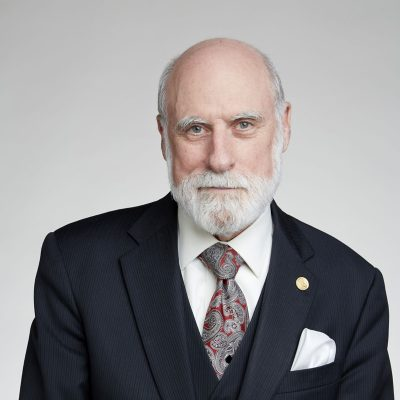
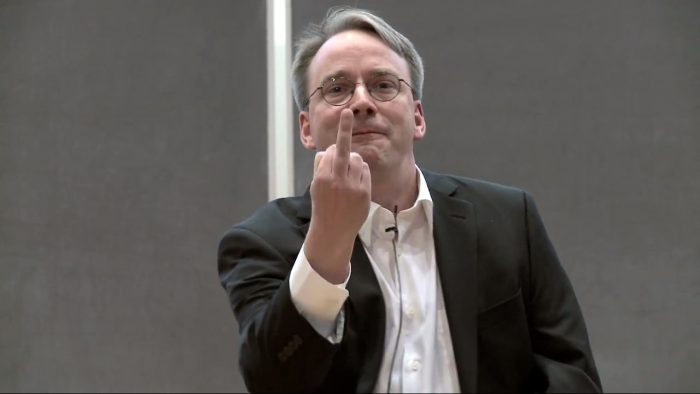
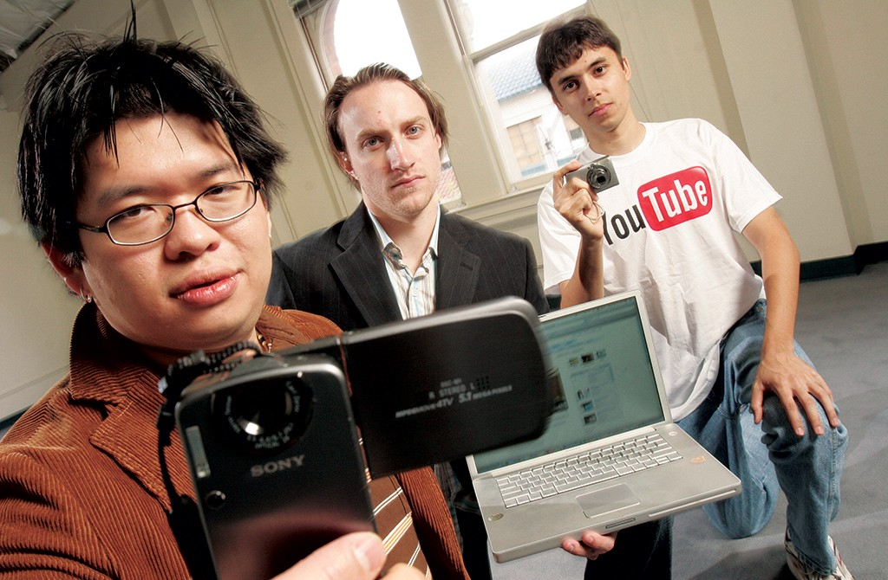
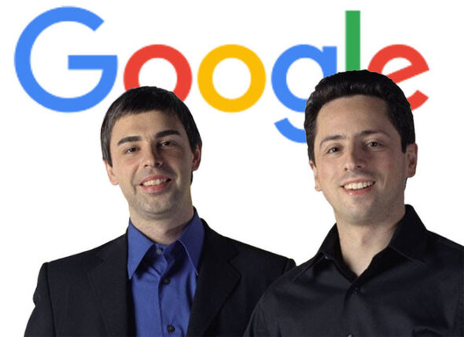
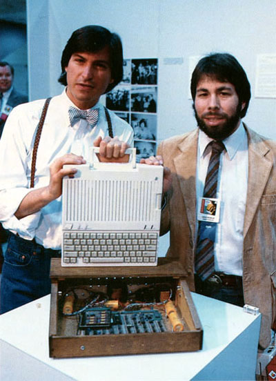

História da Web: as personalidades que fizeram história
Nesse mês de março a rede mundial de computadores (WWW) comemora 33 anos de sua idealização e seu funcionamento bem-sucedido só ocorreu um ano depois. E algumas pessoas foram responsáveis diretamente por mudanças significativas em como navegamos e usamos a rede atualmente. Vale lembrar que web e Internet não são a mesma coisa, embora sejam dependentes. A segunda originalmente se chamava ARPANET e foi criada em 1969 pelo Departamento de Defesa dos Estados Unidos, com o objetivo de interligar as bases militares e de pesquisa do governo. Na década de 1970, universidades puderam se conectar à ARPANET, mas a mesma seguiu de uso exclusivo para estes setores. Somente ao final dessa década, e com o surgimento do protocolo TCP/IP, é que a mesma se tornou pública e ficou conhecida como Internet. Para celebrar a data da criação da WWW, selecionamos alguns nomes importantes para o desenvolvimento da web, desde sua criação até os dias de hoje. Confira a seguir:
Tim Berners-Lee: pai da World Wide Web (WWW)

Cientista da computação, o britânico é conhecido como o criador do WWW. Quando trabalhava no CERN, em março de 1989, ele criou a proposta de um sistema de rede de gerenciamento e troca de informações e implementou a primeira comunicação bem-sucedida entre um cliente HTTP e um servidor por meio da internet um ano depois, em maio de 1990. Atualmente, Berners-Lee é diretor da World Wide Web Consortium (W3C), que supervisiona o contínuo desenvolvimento da internet.
Robert Cailliau: primeiro navegador web para Mac OS
Engenheiro e cientista da computação belga, Cailliau trabalhou em parceria com Berners-Lee na criação do WWW no CERN. Ele foi o responsável pelo desenvolvimento do primeiro navegador web para o sistema Mac OS, chamado MacWWW. Além disso, também deu início ao projeto Web for Schools para a Comissão Europeia, introduzindo a web como recurso para a educação.
Vint Cerf: pai da internet
Reconhecido como um dos pais da internet, Vint Cerf, junto a seu amigo Bob Kahn, criou o protocolo de comunicação TCP/IP, a linguagem usada por computadores para conversarem entre si dentro de uma rede. Mas além da internet, Cerf também foi fundamental para o desenvolvimento do primeiro sistema comercial de e-mails conectado a web. Ele também ajudou a formar o ICANN, comissão mundial responsável por coordenar a criação de endereços e domínios de internet.
Marc Andreessen: primeiro navegador web
Conhecido como cocriador do Mosaic, o primeiro navegador web, Andreessen é um empreendedor americano, investidor e engenheiro de software. Junto com Eric Bina fundou a Netscape, empresa responsável pelo browser Netscape Navigator, que dominou a internet na década de 1990. Atualmente, ele está presente no conselho de diretores de empresas como Facebook, eBay e HP.
Ray Tomlinson: pai do e-mail
Em 1971 o programador americano implementou um sistema de correio eletrônico na ARPANET (primeira rede operacional de computadores e precursora da internet) e tornou possível a troca de mensagens entre máquinas situadas em diferentes localidades. Foi dele a ideia de usar o símbolo “@” para endereços de e-mail.
Bill Gates: Microsoft
O fundador da Microsoft foi relativamente cético até reconhecer a importância da web. Apenas em maio de 1995 é que a empresa passou a incluir o navegador Internet Explorer em seu sistema operacional Windows. O IE ainda é um dos browsers mais usados na internet, tendo alcançado seu pico entre 2002 e 2003 com 95% de adoção em todo o mundo.
Linus Torvalds: Linux
O engenheiro de software finlandês foi a principal cabeça por trás do desenvolvimento da plataforma Linux. Torvalds também inventou o software Git, usado por desenvolvedores para a construção de aplicações. Atualmente trabalha como coordenador do projeto do kernel do Linux.
Chad Hurley, Steve Chen & Jawed Karim: YouTube
O YouTube foi criado em 2005 por Steve Chen, Chad Hurley e Jawed Karim, então três funcionários do Paypal. Em novembro do ano seguinte, o serviço foi comprado pelo Google, por 1,65 bilhões de dólares. Em 2013, o YouTube superou a marca de 1 bilhão de visitas mensais. Os usuários assistem 3 bilhões de horas de vídeos a cada mês e em média a cada minuto 72 horas de vídeos são carregados no site. (Na foto estão apenas Chen e Hurley)
Sergey Brin & Larry Page: Google
Fundadores do Google, inovaram o setor de buscas e pesquisas na internet. A ideia surgiu quando ambos frequentavam a universidade e teorizaram sobre um sistema que melhor analisasse as relações entre os websites. Hoje, o Google indexa bilhões de páginas na internet, além de oferecer diversos serviços baseados na nuvem.
Steve Jobs & Steve Wozniak: Apple
Ambos revolucionaram o mercado da computação ao fundarem a Apple em 1976. Wozniak é considerado um dos responsáveis por iniciar a revolução do computador pessoal com a criação do Apple I. Depois de seis anos, em 1985 ele deixou definitivamente a Apple. Já Jobs continuou na empresa até sua morte em 2011 (com a devida pausa forçada em 1985) e por lá foi o pioneiro no mercado de smartphones com o lançamento do iPhone, mudando drasticamente a forma como as pessoas acessam a internet hoje em dia.
Jeff Bezos: Amazon
Fundador da Amazon e empreendedor da tecnologia é um importante personagem para a consolidação do e-commerce. Sob seu comando a Amazon se tornou o maior varejista online e modelo para vendas pela internet. A empresa começou como uma loja virtual de livros e atualmente vende uma diversidade de produtos. Há alguns anos a companhia passou a produzir hardware e inovou o mercado de livros digitais com o leitor Kindle. A Amazon também é considerada o maior provedor de serviços de computação em nuvem.
Jimmy Wales: Wikipedia
O empreendedor americano é conhecido por ser o cofundador da enciclopédia online. Ao contrário das enciclopédias tradicionais, a Wikipedia quebrou o modelo padrão ao permitir a edição de artigos. São mais de 30 milhões de artigos em 287 idiomas criados de forma colaborativa por voluntários.
Orkut Buyukkokten: rede social
Orkut Büyükkökten é um engenheiro de software, nascido na Turquia, em 1975, e que criou a ideia de rede social que conhecemos hoje. O Orkut surgiu como parte de um projeto social iniciado enquanto cursava a Universidade de Stanford, nos Estados Unidos. Mais tarde, quando entrou para a equipe do Google, seu projeto universitário se tornou um dos sites mais acessados do mundo. Atualmente Orkut abandonou o site, mas mantém um perfil privado no Facebook e uma conta desatualizada no Twitter.
Mark Zuckerberg: Facebook
A transformação da rede social veio com o Facebook, em 2004. O serviço trouxe melhorias em comparação ao Orkut, permitindo a criação de uma rede privada de amigos. Atualmente é a maior rede social do mundo com mais de 1,2 bilhão de usuários, e se tornou também uma das principais plataformas online para aplicativos, de games a e-commerce.